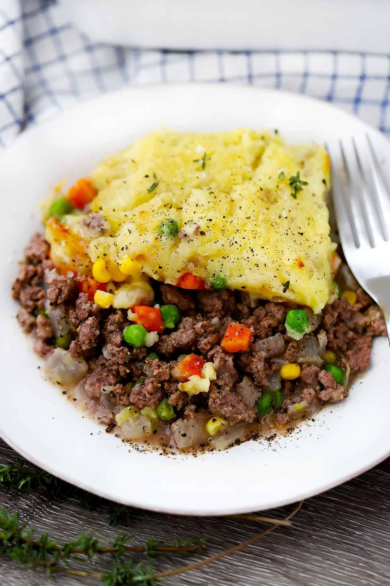

Shepherds pie

Shepherd's pie is an amazing dish that tastes good, while also lasting you a while
if you make a big enough portion. For this recipe, you're going to need:
- 2KG Ground Beef
- 2 Cans of Peas and Carrots
- 2 Cans Corn Niblets
- 5-6 Large Russet Potatoes
- Shredded Cheese
- Butter
- Milk
- Water
- 3 Shepherd's Pie Gravy Mix
- First and foremost you're going to want to peel your potatoes and chop them into halves or
quarters depending on how big they are, put them in the pot covering the tops of them with
water and adding salt to taste. Set that bad boy to boil while we get the ground beef ready.
- Next we're going to brown our ground beef, preheat your pan to medium high heat before putting
the meat on there until its all brown. After the meat is cooked we're going to drain the fat,
to do that you can either tilt the pan into a mason jar to drain the fat into, or you can get
some paper towel, fold it up and put it in the pan and move it around to suck up the fat,
throw away when it's got all the fat it can. After we got the fat out, we want to add in
our gravy mix, pour the gravy mix and required amount of water into the pan and let that
come to a boil before letting it simmer for a bit to let the gravy to thicken up, then
dump the meat and gravy into a roaster with a lid.
- Next we can add the vegetables, open the drain the liquids from your canned vegetables
then add them to the roaster, feel free to mix them around. Start pre-heating the oven
to 375 degrees fahrenheit.
- Next after the potatoes have been boiled and they are soft when you insert a fork
into them, strain the potatoes then put them back in the pot, slap in some butter
and give that a light mashing until the butter is completely melted. Add milk to your liking
to the mix and mash until smooth. Lather it on top of the meat and vegetable mix evenly.
Add the shredded cheese on top, put the lid on, and now it's ready to bake in the oven
for 1-2 hours. Take out of the oven, let it sit for a bit to cool down, and enjoy!
Refrigerate leftovers after everyone has gotten their share.
Index